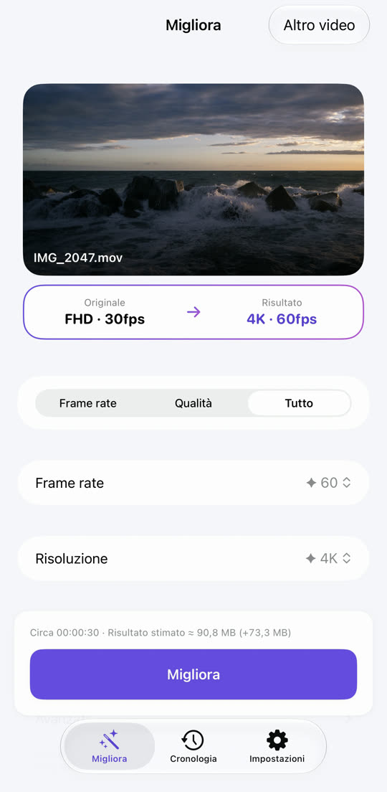
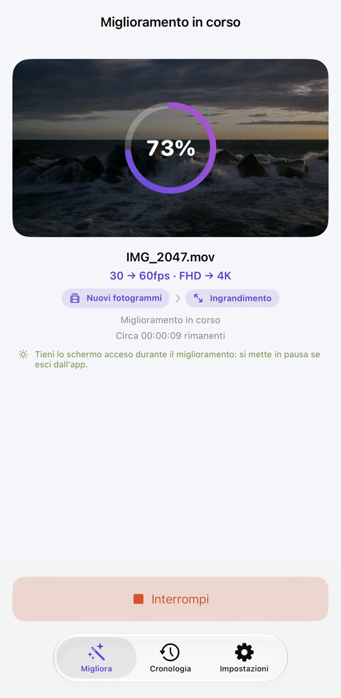
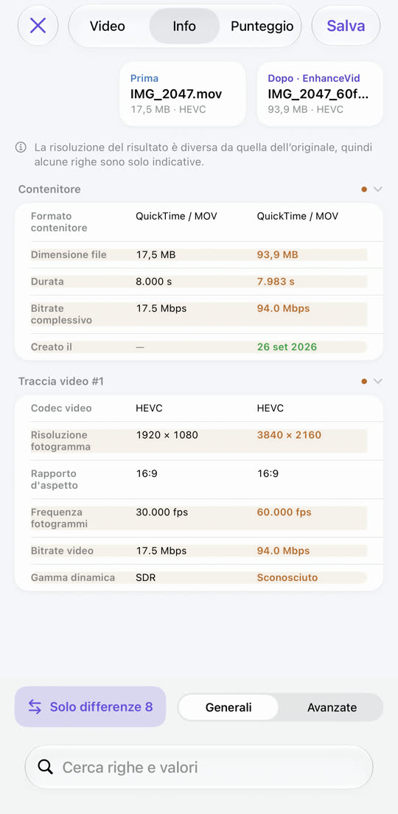

Video a scatti, ora fluido.
Video sfocato, ora nitido.
Da 30 a 60 fps, da Full HD a 4K. EnhanceVid calcola nuovi fotogrammi tra quelli che hai girato e aumenta la risoluzione per più dettagli. Tutto avviene sul tuo iPhone e il risultato viene salvato come nuovo video accanto all’originale, che resta intatto.
Scarica su App StoreGratis · iOS 26 o successivo · iPhone · iPad · Mac con chip Apple

Meno sfocatura, più dettagli.
La risoluzione viene aumentata con l’upscaling di Apple MetalFX. Trascina la linea per confrontare.

 OriginaleMigliorato
OriginaleMigliorato
Immagine di esempio: un originale a bassa risoluzione ingrandito, accanto alla versione migliorata.
Movimenti a scatti, ora scorrevoli.
Nuovi fotogrammi vengono calcolati tra quelli originali. I cambi di scena non vengono mai mescolati: niente immagini fantasma.
Il movimento è esagerato per rendere visibile la differenza.
Scegli, avvia, confronta, salva.


Tutto quello che serve, già dentro.
Pulisci i video sgranati girati con poca luce. Sui dispositivi compatibili.
Da 4K 60 fps a 30 fps, da 4K a Full HD: puoi anche ridurre.
Riproduzione affiancata, tabella dei dati e punteggi di qualità (PSNR, SSIM, VMAF opzionale).
I video HDR e Dolby Vision girati con iPhone restano in HDR.
Video da Foto e dall’app File, inclusi MKV, WebM e AVI.
Il risultato è salvato come nuovo video. L’originale non viene mai modificato né eliminato.
Nulla viene caricato e non serve un account. Gratis, sostenuto dalla pubblicità — Privacy